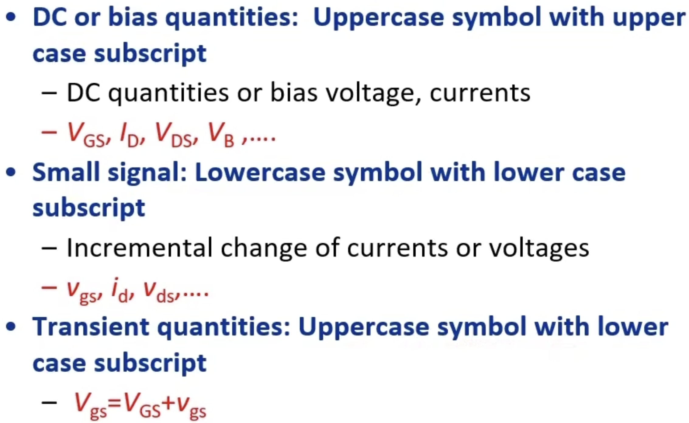
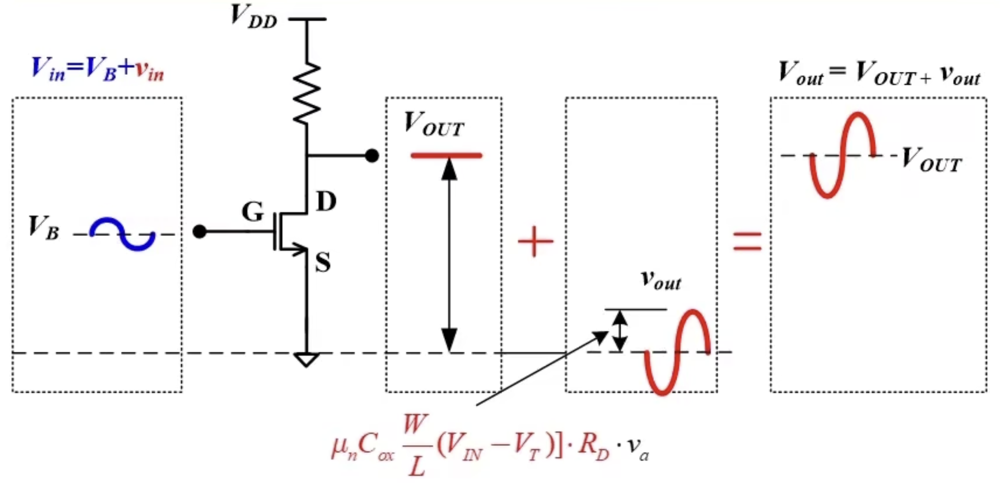
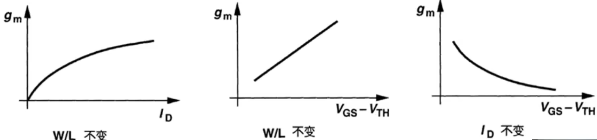
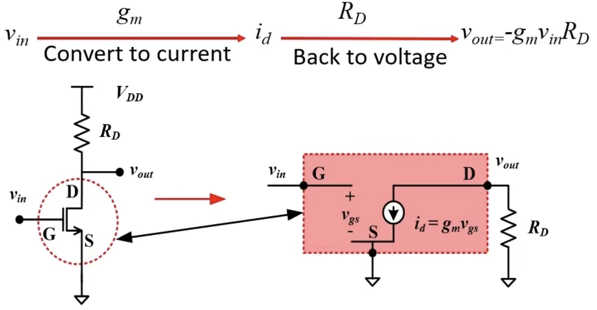

MOS小信号模型
Notations

Understanding the concept of small signal model
Transient response

\[
v_{in} = v_a \sin \omega t
\]
\[
v_{out} = -i_dR_d = -\mu_n C_{ox} \frac{W}{L} (V_{GS} - V_{TH})v_a \sin \omega t
\]
Transconductance of MOS
\[
g_m = \mu_n C_{ox} \frac{W}{L} (V_{GS} - V_{TH}) = \sqrt{2 \mu_n C_{ox} \frac{W}{L} I_D} = \frac{2I_D}{V_{GS}- V_{TH}}
\]
Three elements for calculating \(g_m\)
- There are only two independent elements in \(W/L\), \(I_D\) and \(V_{GS} - V_{TH}\).
- Any one can be derived from the other two.

Ideal small signal model of MOS
